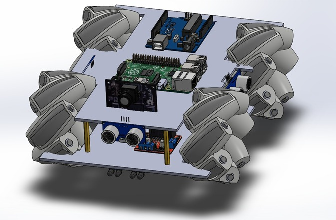
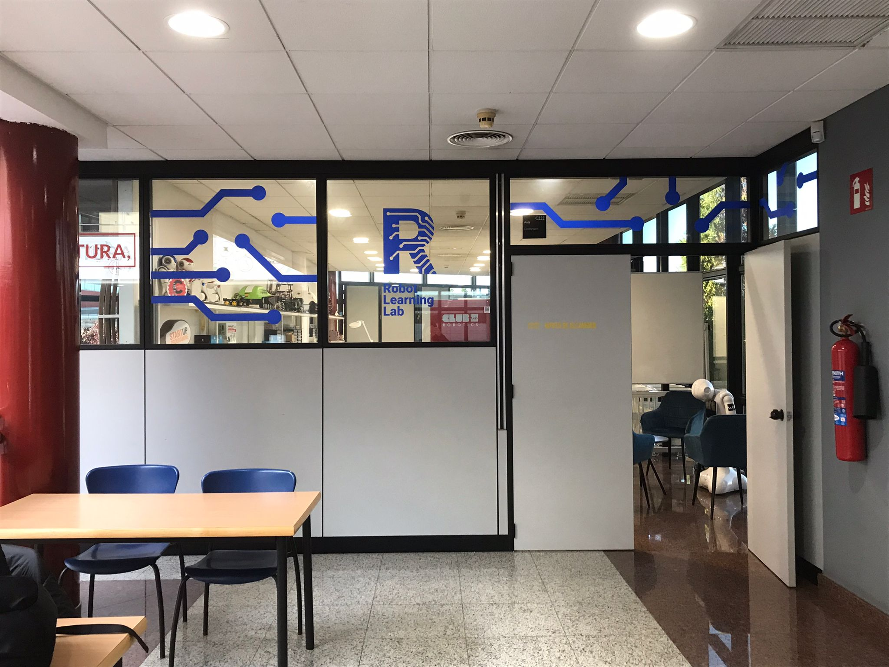
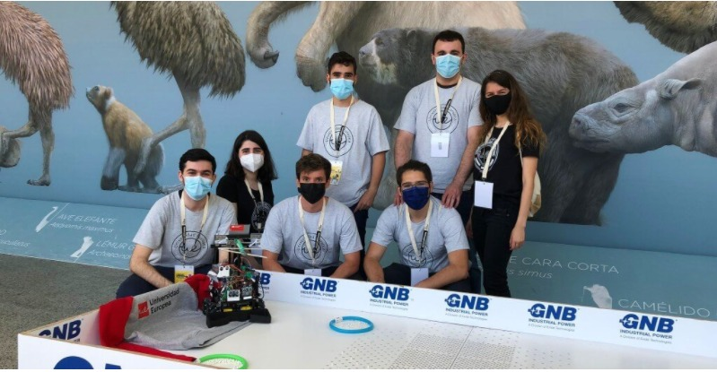
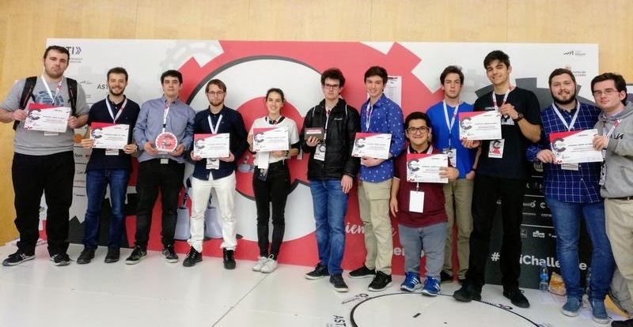
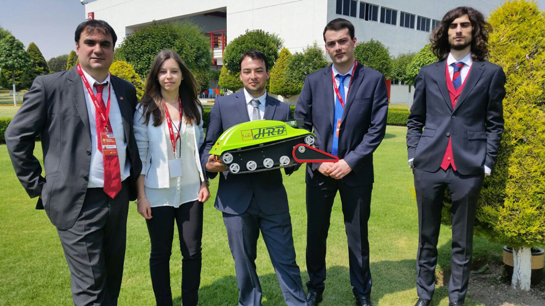
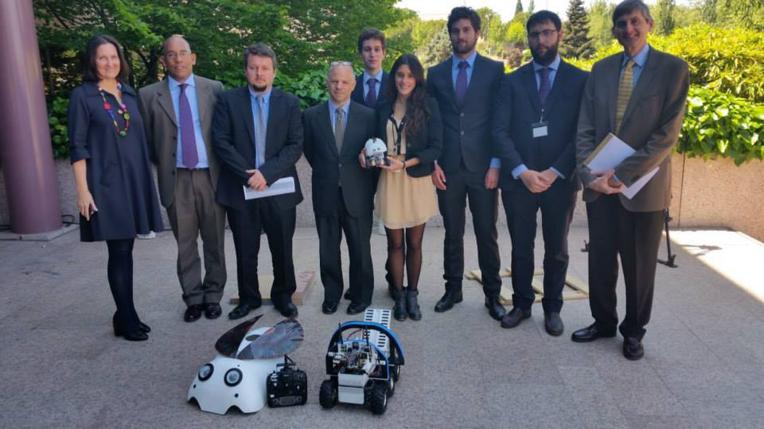

¿Estás interesado en el mundo de la robótica, y te gustaría participar independientemente de lo que estés estudiando?
¡Entonces eres bienvenido a nuestro club!
Somos un club fundado en 2015 con la intención de realizar proyectos conjuntos relacionados con el mundo de la robótica, y actualmente es 100% operado por los alumnos tanto la gestión interna como los proyectos en sí. ¿No tienes conocimientos previos de la materia? No te preocupes, tenemos cursos y proyectos con los que aprenderás mientras conoces a gente nueva de forma divertida.
Constantemente participamos en competiciones tanto nacionales como internacionales, o incluso en colaboraciones con otras universidades y empresas, por lo que acabarás conociendo a gente de muchos sitios y trabajando en proyectos tan diversos como drones, brazos robóticos o hasta incluso barcos recolectores de basura.
IMPRESORA 3D

Creamos en el club desde cero nuestra propia impresora 3D usando piezas diseñadas por nosotros, desde los ventiladores y engranajes hasta incluso la electrónica.
NAO

Robot comercial creado por la empresa AliveRobots. Tiene software de visión artificial, reconocimiento de voz y se puede programar para realizar movimientos coreografiados. Fue utilizado en un experimento junto con alumnos de psicología para evaluar su interacción con niños con trastorno de espectro autista.
PEBELS (PEPPER)

La estrella e imagen de nuestro club, siendo usado desde para inaugurar ceremonias de graduación a incluso interactuar con visitantes del club gracias a sus sistemas de reconocimiento facial, y procesamiento de lenguaje natural.
ROBOT ARAÑA

Proyecto colaborativo con la Escuela Técnica Superior de Ingenieros Industriales de Ciudad Real usado para inspeccionar palas de aerogeneradores a una distancia segura. Se propuso a los alumnos que reparasen componentes y finalmente mejorasen su funcionalidad final.
BARCO RECOLECTOR DE BASURA MARINA

Proyecto desarrollado en 2019 para detección y recolección de objetos flotantes en agua que se pudiesen considerar como basura plástica.
ASTI 2019
Robot diseñado para la competición creada por la empresa ASTI Mobile Robotics de 2019 para poder recorrer y superar todos los obstáculos y pruebas propuestos. Se obtuvo el 1º en mejor institución académica y 2º en resolución de obstáculos y pruebas
HRB

Diseñado para el Laureate Award for Excellence in Robotics Engineering, donde su función era buscar personas enterradas en escombros después de una catástrofe natural o derrumbamiento de un edificio.
JUBA-II

Diseñado para Laureate Award for Excellence in Robotic Engineering en 2015 para medir, recopilar datos, investigar y aprender acerca de la contaminación atmosférica. Está orientado a niños y jóvenes para ayudarles a tomar conciencia en el medio embiente y fomentar a la vez el interés por la tecnología, la ciencia y la ingeniería.
ALACRAN

Compitió en la quinta edición del Laureate Award for Excellence in Robotic Engineering en Lima (Perú). Diseñado para poder catalogar y guardar distintos tipos de residuos que se simulaban con cajas de distintos colores. Debía ser un robot versátil y el tiempo utilizado para recogerlas y su catalogación era lo que definía el mejor robot.
QBO

Robot educativo y de código creado en 2011 por la empresa TheCorpora. Aprende a usar sistemas de visión artificial y el framework de robots ROS, y acepta el reto de hacer que se mueva por los pasillos de la universidad de forma autónoma
ASTI CHALLENGE 2020
Robot diseñado para la competición creada por la empresa ASTI Mobile Robotics de 2020 para poder recorrer y superar todos los obstáculos y pruebas propuestos
Robot Learning LAB
Aula principal del club, donde realizamos la gran mayoría de nuestras actividades y talleres.
Industria-4.0 LAB
Laboratorio diseñado para que los alumnos puedan entender y aprender diferentes las nuevas tecnologías relacionadas con la automatización industrial, permitiendo a perfiles diversos que actualmente forman la 4º revolución industrial. Puedes ver más información aquí

FabLab UE
La red de FabLab mundial es una organización que agrupa laboratorios de prototipado bajo las directrices del MIT. Nuestro FabLab permite a todos los alumnos de la universidad participar en talleres de formación, realizar la cartelería y trofeos de las competiciones de la universidad y usar herramientas como CNC, cortadora láser e impresión 3D para los proyectos llevados a cabo en los clubes. Puedes acceder a su página desde aquí

ASTI Robotics Challenge
-2021-
Competición organizada por la fundación ASTI para desarrollar la vocación STEM en la robótica móvil. Consta de circuitos y pruebas a resolver donde cada equipos ha de diseñar y construir un robot capaz de superar el máximo número de ellos. Se obtuvo 1º puesto a mejor institución académica y 2º en resolución de obstáculos y pruebas
El equipo estaba formado por los estudiantes Diego Vázquez, Patricia Colmenares, Luis Alfonso Ferrer, Ángel David Álvarez, Álvaro Fierro y María Sol Torres dirigidos por el profesor Carlos Quiterio Gómez Muñoz.
ASTI Robotics Challenge
-2019-
Competición organizada por la fundación ASTI para desarrollar la vocación STEM en la robótica móvil. Consta de circuitos y pruebas a resolver donde cada equipos ha de diseñar y construir un robot capaz de superar el máximo número de ellos. Se obtuvo 1º puesto a mejor institución académica y 2º en resolución de obstáculos y pruebas
El equipo estaba formado por los estudiantes Diego Ortega, Carlos Barreiro Luis Alfonso Ferrer Perez Nicolas Quilez Andres Paula Monedero Matesanz Juan José Flores Cozzolino Giuseppe Spagnuolo Javier Relinque Rodríguez Pablo Ferrer López Alejandro Martin Andres Sarría dirigidos por el profesor Carlos Quiterio Gómez Muñoz.
Laureate Award for Excellence in Robotics Engineering
-2016-
El propósito del concurso de este año ha sido la fabricación de un robot que pueda ser capaz de operar ante un desastre natural pudiendo ser capaz de reconocer el terreno, reportar información del mismo, al igual que ser capaz de encontrar posibles victimas en dicho entorno. Para ello, el robot dispone de varias cámaras, al igual que múltiples sensores con lo que poder llevar a cabo su función. Llegando a ser capaz de realizar un mapa a tiempo real del entorno mediante el uso de una Kinect de Xbox. Se obtuvo el primer premio.
El equipo estaba formado por los estudiantes Juan Alberto García Donoso, Santiago Gualda Torrijos, María Hortal González y Hugo Ferrando Seage, dirigidos por el profesor Sergio Bemposta.
Laureate Award for Excellence in Robotics Engineering
-2015-
El objetivo de la segunda edición de este concurso está relacionado con la temática “Gestión Ambiental: Calidad del Aire”, donde los estudiantes tienen que desarrollar una plataforma robótica capaz de controlar, por un período de 24 horas consecutivas, la calidad del aire en los espacios interiores y exteriores de los campus universitarios de Laureate a través de la medición de determinadas variables físicas y químicas. Se presentó el robot JUBA II, obteniéndose el primer puesto.
Queremos agradecer al profesor Victor Padrón y a los estudiantes de nuestra Escuela, Carlos García, Milagrosa Puig, Javier Collado y Eric Fernandez por su excelente trabajo.
ELECTRÓNICA
SOLDADO
PROGRAMACIÓN
DISEÑO 3D
IMPRESIÓN 3D
FUNDAMENTOS DE MECÁNICA
@roboticsuem
@robotics_uem
clubroboticsuem@gmail.com